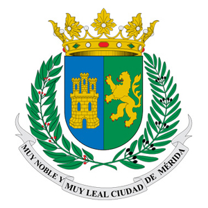
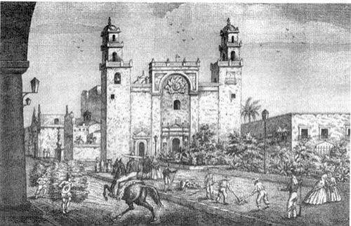
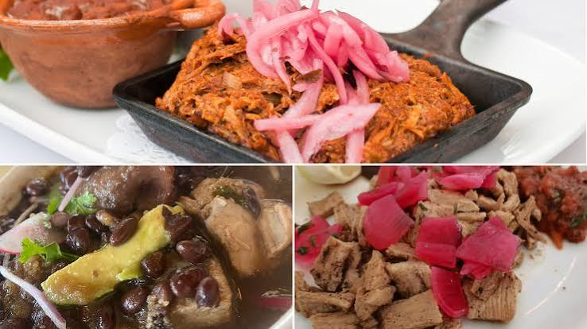
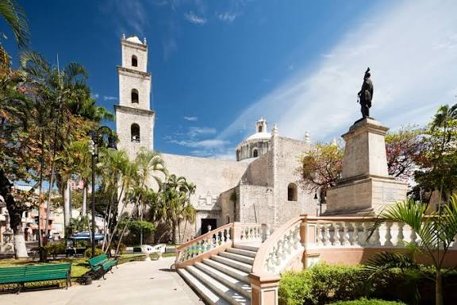

Fundada el 6 de enero de 1542 sobre la antigua ciudad maya de T'ho, Mérida posee el segundo centro histórico más grande de México. Sus calles se caracterizan por una traza en cuadrícula con un sistema de nomenclatura numérico único. El corazón de la ciudad resguarda la Catedral de San Ildefonso, la más antigua de América continental.

Historia
En Mérida, como en todo Yucatán no existen ríos ni depósitos de agua dulce en su superficie, las condiciones geológicas y topográficas del estado impiden su formación. A cambio, en el estado existen acumulaciones subterráneas de agua provocadas por la filtración de las lluvias a través del suelo.
Leer más
Platillos tipicos
En el área abundan frutas frescas, vegetales, mariscos y carnes deliciosas. Estos ingredientes son combinadas con salsas, chiles y especies que son el deleite del paladar más experimentado.
Leer más
Lugares Bonitos
Mérida, la capital de Yucatán, es conocida como la "Ciudad Blanca" gracias a la limpieza de sus calles y la arquitectura de piedra caliza. Es un destino que combina a la perfección la rica herencia maya, un ambiente colonial romántico y una gastronomía de clase mundial.
Leer más